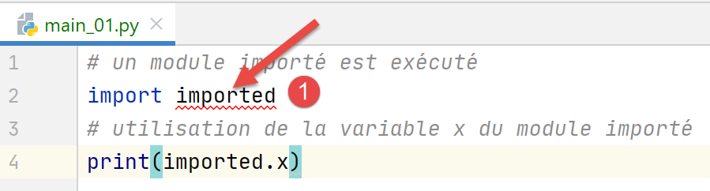
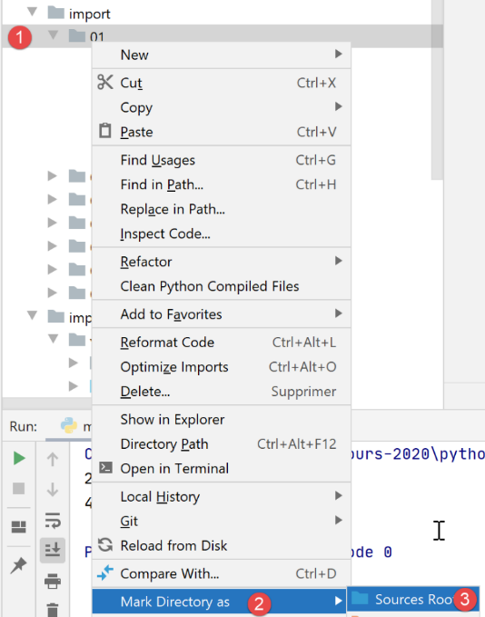
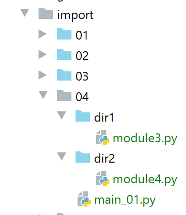
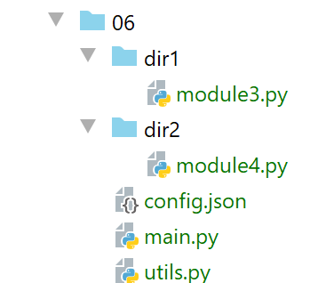

9. Las importaciones
El error que se presentó en la versión 1 del ejercicio práctico nos lleva a profundizar en la función de la instrucción [import].

9.1. Scripts [import_01]
El script [imported] será importado por diferentes scripts (también llamados módulos):

# módulo importado
# esta instrucción se ejecutará cada vez que se importe el módulo
print("2")
# variable que pertenece al módulo importado
x=4
Un módulo se ejecuta al ser importado. Así, cuando se importe el módulo [imported]:
- se mostrará la línea 3;
- la variable x de la línea 5 recibirá su valor;
El script [main_01] es el siguiente:
# se ejecuta un módulo importado
import imported
# uso de la variable x del módulo importado
print(imported.x)
- línea 2: se importa el módulo [imported]. Esto provocará su ejecución:
- se mostrará el valor 2;
- se crea la variable x con el valor 4;
- línea 4: se utiliza la variable x del módulo importado;
En PyCharm, se reporta un error:
En [1], PyCharm indica que no reconoce el módulo [imported]. En términos técnicos, esto significa que la carpeta que contiene el módulo [imported] no se encuentra en la ruta de Python (Python Path) de PyCharm. La ruta de Python (Python Path) es el conjunto de carpetas en las que se buscan los módulos importados. Para resolver este problema, basta con declarar a [Sources root] la carpeta en la que se encuentra el módulo [imported], en este caso la carpeta [import/01]:


Tras esta operación, la carpeta [import/01] se agrega a la ruta de Python de PyCharm y el error desaparece:

- en [1], la carpeta [01] ha cambiado de color;
- en [2-3], ya no hay error;
Los resultados de la ejecución son los siguientes:
Comentarios
- la línea 2 es el resultado de la ejecución del módulo importado;
- la línea 3 muestra el valor de la variable x del módulo importado;
De este ejemplo, cabe destacar el concepto importante de que un módulo (o un script) importado se ejecuta.
El script [main_02] es el siguiente:
# se importa la variable x del módulo importado
from imported import x
# se muestra
print(x)
- En la línea 2, tenemos otra sintaxis de importación: [from module import objet1, objet2, …]. Aquí se importa la variable [imported.x]. Con esta sintaxis, la variable x se convierte en una variable del script [main_02]. Ya no es necesario anteponerle el prefijo de su módulo [imported];
- línea 4: se muestra la variable x de [main_02];
Los resultados de la ejecución son los siguientes:
El script [main_03] es el siguiente:
# se importa todo lo que es visible del módulo importado
from imported import *
# se utiliza la variable x del módulo importado
print(x)
La notación [import *] de la línea 2 significa que se importan todos los objetos visibles del módulo importado (variables, funciones).
Los resultados son los siguientes:
El script [main_04] es el siguiente:
# se importa la variable x del módulo importado
# y se le cambia el nombre a y
from imported import x as y
# se muestra la variable y
print(y)
La línea 3 muestra que se puede importar un objeto del módulo importado y asignarle un alias. Aquí, la variable [imported.x] se convierte en la variable [main_04.y]. Los resultados son los mismos que antes.
9.2. Script [import_02]

El módulo importado [module1.py] es el siguiente:
# una función
def f1():
print("f1")
El módulo importado define una función, algo que ocurre con frecuencia.
El script [main_01] es el siguiente:
# import
import module1
# ejecución de f1
module1.f1()
- En la línea 2, se importa el módulo. Se ejecutará. Aquí no muestra nada;
- línea 4: se ejecuta la función [f1] del módulo importado;
Los resultados de la ejecución son los siguientes:
Nota: Para evitar que PyCharm reporte un error al importar la línea 2, hay que colocar la carpeta que contiene [module1] dentro de [Sources Root] de PyCharm:

En [1], el archivo [02], que se colocó dentro de [Sources Root], se ha vuelto azul. Cabe señalar que el error reportado no impide en este caso la ejecución correcta de los scripts. De hecho, al ejecutar el script [main_0x], la carpeta del script se agrega automáticamente a la ruta de Python. Por lo tanto, se encuentra [module1]. De ahora en adelante, cuando en una captura de pantalla una carpeta aparezca en azul, significa que se ha agregado a la ruta de Python de [Sources Root] a partir de PyCharm.
El script [main_02] es el siguiente:
# importar
from module1 import f1
# ejecución de f1
f1()
- la línea 2 importa la función [f1] del módulo [module1];
- en la línea 4, se utiliza la función f1;
Los resultados son idénticos a los del script [main_01].
9.3. Scripts [import_03]

Nota: [03] se encuentra en el proyecto [Sources Root].
Los nuevos scripts importarán el módulo [module2], que no se encuentra en la misma carpeta que ellos.
El script [module2] es el siguiente:
# una función
def f2():
print("f2")
Por lo tanto, el script define una función [f2].
El script [main_01] es el siguiente:
# importación del módulo Class2
import dir1.module2
# ejecución f2
dir1.module2.f2()
- línea 2: se utiliza una notación especial para indicar cómo localizar el módulo [module2]. Hay que leer [dir1.module2] como la ruta [dir1/module2]: para encontrar [module2], se parte de la carpeta del script actual [main_01], luego se pasa a [dir1] y ahí se encuentra [module2]. No hay que olvidar aquí que el punto de partida de la ruta es la carpeta del script que realiza la importación;
- línea 4: para ejecutar la función [f2] desde [module2];
Los resultados son los siguientes:
Línea 2, el resultado de la función [f2].
El script [main_02] es el siguiente:
# importación del módulo dir1.module2, al que se le cambia el nombre
import dir1.module2 as module2
# ejecución de f2
module2.f2()
Línea 2: se renombra el módulo [dir1.module] para simplificar la escritura de la línea 4.
El script [main_03] es el siguiente:
# importación de la función f2 del módulo dir1.module2
from dir1.module2 import f2
# ejecución de f2
f2()
Esta vez, en la línea 2, solo se importa la función [f2], que pasa a ser una función del script [main_03] (línea 4).
Todos estos scripts funcionan tanto en el contexto de PyCharm como en el de una consola de Python. La razón es que, en ambos casos, la carpeta del script ejecutado —en este caso, la carpeta [03]— forma parte de la ruta de Python. Por lo tanto, se encuentra la carpeta [dir1/module2].
9.4. Scripts [import_04]

Aquí, las carpetas [dir1] y [dir2] se han colocado dentro de la carpeta [Sources Root] del proyecto PyCharm.
El primer módulo importado es [module3]:
# una función
def f3():
print("f3")
El segundo módulo importado es [module4]:
from module3 import f3
# una función
def f4():
f3()
print("f4")
- En la línea 1, se importa la función [f3] desde [module3]. Aquí, [module3] es visible porque se ha colocado su carpeta [dir1] dentro de [Sources Root];
- líneas 4-6: se define una función [f4] que llama a la función [f3] de [module3];
El script principal [main_01] es el siguiente:
# se importa el módulo 4
from module4 import f4
# ejecución f4
f4()
- En la línea 2, se importa el módulo [module4]. Este es visible porque se ha colocado su carpeta [dir2] dentro de [Sources Root] de PyCharm;
- línea 4: ejecución de la función [f4] de [module4];
Los resultados de la ejecución de [main_01] en PyCharm son los siguientes:
Ahora, ejecutemos [main_01] en un terminal (consola) de Python:

Los resultados son los siguientes:
¿Qué pasó? La terminal de Python no tiene conocimiento de la ruta de Python ni de los archivos [Sources Root] y PyCharm. Tiene su propia ruta de Python. En ella, siempre se encuentra la carpeta del script que se está ejecutando, en este caso el script [main_01]. Por lo tanto, conoce la carpeta [import/04]. En el script ejecutado, encuentra la línea:
from module4 import f4
El intérprete de Python busca [module4] en las carpetas de su ruta de Python. Sin embargo, [module4] no se encuentra en [import/04] —que sí está en la ruta de Python—, sino en [import/04/dir2], que no está allí. De ahí el error.
Así que nos encontramos con un problema que ya hemos visto antes: un script que se ejecuta correctamente en PyCharm puede fallar en el contexto de un terminal de Python. Es un problema recurrente que tendremos que resolver.
9.5. Scripts [import_05]

Nota: las carpetas [dir1] y [dir2] se incluyen en la ruta de Python. Cabe señalar que aquí existe un conflicto: [module3] y [module4] aparecerán en dos ubicaciones de la ruta de Python de PyCharm:
- en [import/04/dir1] y [import/05/dir1] para [module3];
- en [import/04/dir2] y [import/05/dir2] para [module4];
Entonces, podemos extraer [import/04/dir1] y [import/04/dir2] de [Sources Root] del proyecto PyCharm. Resulta que, en este caso, [import/05/dir1] es una copia de [import/04/dir1] (lo mismo ocurre con [dir2]) y, por lo tanto, no hay ningún problema. Sin embargo, cabe señalar que, dentro mismo de PyCharm, hay que prestar atención a la lista de carpetas de [Sources Root] para evitar conflictos.
El script [main_01] queda así:
import sys
# se modifica el sys.path para incluir las carpetas
# que contienen las clases que se van a importar
sys.path.append(".")
sys.path.append("./dir1")
sys.path.append("./dir2")
# se importa el módulo4
from module4 import f4
# ejecución f4
f4()
Estamos tratando de resolver el problema de la ruta de Python. Queremos una que funcione igual de bien en PyCharm que en un terminal de Python. Para ello, lo vamos a arreglar nosotros mismos.
- Líneas 4-6: agregamos las carpetas [., ./dir1, ./dir2] a la ruta de Python. Para que esto funcione, la carpeta actual en el momento de la ejecución debe ser la carpeta [import/05]. Esto será así en PyCharm, pero no necesariamente en un terminal de Python, como veremos;
- línea 8: se importa [module4]. Tras lo que acabamos de hacer, debería encontrarse en [./dir2];
La ejecución en PyCharm arroja los siguientes resultados:
Ahora, en un terminal de Python:
(venv) C:\Data\st-2020\dev\python\cours-2020\python3-flask-2020\import\05>python main_01.py
f3
f4
Línea 1: el archivo de ejecución es [import/05].
Ahora subamos un nivel en el árbol de [import/05]:
(venv) C:\Data\st-2020\dev\python\cours-2020\python3-flask-2020\import\05>cd ..
(venv) C:\Data\st-2020\dev\python\cours-2020\python3-flask-2020\import>python 05/main_01.py
Traceback (most recent call last):
File "05/main_01.py", line 8, in <module>
from module4 import f4
ModuleNotFoundError: No module named 'module4'
- Línea 2: cuando se ejecuta [main_01], ya no estamos en la carpeta [import/05], sino en [import]. Sin embargo, hemos escrito:
sys.path.append(".")
sys.path.append("./dir1")
sys.path.append("./dir2")
Esto agrega a la ruta de Python las carpetas [import, import/dir1, import/dir2], que no es en absoluto lo que queremos. Cabe señalar que agregar a la ruta de Python carpetas que no existen (import/dir1, import/dir2) no genera errores.
Hemos avanzado, pero no es suficiente. Hay que agregar a la ruta de Python, no rutas relativas, sino rutas absolutas.
El script [main_02] es una variante de [main_01] que utiliza un archivo de configuración [config.json]:
{
"dependencies": [
"C:/Data/st-2020/dev/python/cours-2020/python3-flask-2020/import/05/dir1",
"C:/Data/st-2020/dev/python/cours-2020/python3-flask-2020/import/05/dir2"
]
}
El valor de la clave [dependencies] es la lista de carpetas que se deben agregar a la ruta de Python. Cabe destacar que aquí se han utilizado nombres absolutos y no relativos.
El script [main_02] utiliza el archivo [config.json] de la siguiente manera:
import codecs
import json
import sys
# archivo de configuración
config_filename="C:/Data/st-2020/dev/python/cours-2020/python3-flask-2020/import/05/config.json"
# lectura del archivo de configuración JSON
with codecs.open(config_filename, "r", "utf-8") as file:
config = json.load(file)
# modificación de sys.path
for directory in config['dependencies']:
sys.path.append(directory)
# se importa el módulo 4
from module4 import f4
# ejecución de f4
f4()
- línea 6: fíjate que se ha utilizado el nombre absoluto del archivo de configuración;
- líneas 8-9: se lee el archivo de configuración. Se crea un diccionario [config] (línea 9) con su contenido;
- líneas 11-13: se agregan los elementos de la tabla [config['dependencies']] a la ruta de Python. Cabe señalar que, dado que se han incluido nombres absolutos de carpetas en [config.json], se agregan nombres absolutos a la ruta de Python;
- línea 16: se importa [module4]. Deberíamos poder encontrarlo, ya que ahora [dir2] está en la ruta de Python;
La ejecución arroja los mismos resultados que para [main_02], salvo que el script sigue funcionando cuando la carpeta de ejecución ya no es [import/05]:
(venv) C:\Data\st-2020\dev\python\cours-2020\python3-flask-2020\import>python 05/main_02.py
f3
f4
Línea 1: la carpeta de ejecución es [import].
Hemos avanzado. Hemos visto que:
- que teníamos que construir la ruta de Python nosotros mismos;
- que había que incluir en él las rutas absolutas de todas las carpetas que contienen los módulos importados por la aplicación;
Sin embargo, incluir nombres absolutos en los scripts no es una solución. En cuanto el proyecto se traslada a otro sitio, deja de funcionar. Tenemos que encontrar otra alternativa.
9.6. Scripts [import_06]

Nota: las carpetas [06, dir1, dir2] se colocaron dentro de las carpetas [Sources Root] del proyecto PyCharm. Las carpetas [dir1, dir2] son idénticas a las de los ejemplos anteriores.
El archivo [config.json] es el siguiente:
{
"rootDir": "C:/Data/st-2020/dev/python/cours-2020/v-02/imports/06",
"relativeDependencies": [
"dir1",
"dir2"
],
"absoluteDependencies": [
]
}
Introducimos dos tipos de rutas:
- rutas absolutas, líneas 7-8;
- rutas relativas, líneas 3-6. Estas son relativas a la raíz de la línea 2. De este modo, cuando el proyecto cambie de ubicación, solo se deberá modificar esta línea;
El script [utils.py] utiliza el archivo [config.json] y crea la ruta de Python:
# importaciones
import codecs
import json
import os
import sys
# Configuración de la aplicación
def config_app(config_filename: str) -> dict:
# config_filename: nombre del archivo de configuración
# se permite que las excepciones se propaguen
# procesamiento del archivo de configuración
with codecs.open(config_filename, "r", "utf-8") as file:
config = json.load(file)
# se agregan las dependencias a sys.path
rootDir = config['rootDir']
# se agregan las dependencias relativas del proyecto a la ruta del sistema
for directory in config['relativeDependencies']:
# se agrega la dependencia al inicio de la ruta del sistema
sys.path.insert(0, f"{rootDir}/{directory}")
# se le agregan las dependencias absolutas del proyecto a la ruta del sistema
for directory in config['absoluteDependencies']:
# se agrega la dependencia al inicio de la ruta del sistema
sys.path.insert(0, directory)
# se genera el diccionario de configuración
return config
# carpeta del script ejecutado
def get_scriptdir():
return os.path.dirname(os.path.abspath(__file__))
- línea 8: la función [config_app] recibe como parámetro el nombre del archivo de configuración;
- líneas 12-14: el archivo de configuración se utiliza para crear el diccionario [config];
- línea 20: [sys.path] es la lista de carpetas de la ruta de Python;
- líneas 17-20: las dependencias relativas del archivo de configuración se agregan a la ruta de Python. Se agregan al inicio de la tabla [sys.path], línea 20. De hecho, cuando Python busca un módulo, recorre las carpetas de [sys.path] en orden. Sin embargo, en este documento, los módulos con los mismos nombres se encontrarán en carpetas diferentes de [sys.path]. Al colocar las dependencias de la aplicación al principio de la tabla [sys.path], nos aseguramos de que estas se revisen antes que otras carpetas de [sys.path] que podrían contener módulos con los mismos nombres;
- líneas 21-24: las dependencias absolutas del archivo de configuración se agregan a la ruta de Python;
- línea 26: se devuelve la configuración de la aplicación;
- líneas 29-30: la función [get_scriptdir] devuelve el nombre absoluto de la carpeta del script que se está ejecutando (aquella donde se encuentra la llamada a la función);
El script principal [main] es el siguiente:
# importaciones
import sys
from utils import config_app
def affiche_path(msg: str):
# mensaje
print(f"{msg}------------------------------")
# sys.path
for path in sys.path:
print(path)
# principal -------------
try:
# el sys.path está configurado
affiche_path("avant....")
config = config_app(f"{get_scriptdir()}/config.json")
affiche_path("après....")
# se importa el módulo 4
from module4 import f4
# ejecución f4
f4()
except BaseException as erreur:
print(f"L'erreur suivante s'est produite : {erreur}")
finally:
print("done")
- línea 4: se importa la función [config_app]. Cabe señalar que, dado que [utils] y [main] se encuentran en la misma carpeta, esta función [import] funciona siempre. De hecho, la carpeta del script principal se agrega automáticamente a la ruta de Python;
- líneas 7-12: la función [affiche_path] muestra la lista de carpetas de la ruta de Python;
- línea 19: se configura la aplicación. Obsérvese que se le pasa a la función [config_app] la ruta absoluta del archivo de configuración. Tras esta instrucción, se ha reconstruido la ruta de Python;
- línea 22: se importa [module4]. Gracias a la reconstrucción de la ruta de Python, se encontrará este módulo;
- línea 24: se ejecuta la función [f4];
En el contexto de PyCharm, los resultados de la ejecución son los siguientes:
C:\Data\st-2020\dev\python\cours-2020\python3-flask-2020\venv\Scripts\python.exe C:/Data/st-2020/dev/python/cours-2020/python3-flask-2020/import/06/main.py
avant....------------------------------
C:\Data\st-2020\dev\python\cours-2020\python3-flask-2020\import\06
C:\Data\st-2020\dev\python\cours-2020\python3-flask-2020
C:\Data\st-2020\dev\python\cours-2020\python3-flask-2020\fonctions\shared
C:\Data\st-2020\dev\python\cours-2020\python3-flask-2020\impots\v01\shared
…
C:\Program Files\Python38\python38.zip
C:\Program Files\Python38\DLLs
C:\Program Files\Python38\lib
C:\Program Files\Python38
C:\Data\st-2020\dev\python\cours-2020\python3-flask-2020\venv
C:\Data\st-2020\dev\python\cours-2020\python3-flask-2020\venv\lib\site-packages
après....------------------------------
C:/Data/st-2020/dev/python/cours-2020/v-02/imports/06/dir2
C:/Data/st-2020/dev/python/cours-2020/v-02/imports/06/dir1
C:\Data\st-2020\dev\python\cours-2020\python3-flask-2020\import\06
C:\Data\st-2020\dev\python\cours-2020\python3-flask-2020
C:\Data\st-2020\dev\python\cours-2020\python3-flask-2020\fonctions\shared
C:\Data\st-2020\dev\python\cours-2020\python3-flask-2020\impots\v01\shared
….
C:\Program Files\Python38\python38.zip
C:\Program Files\Python38\DLLs
C:\Program Files\Python38\lib
C:\Program Files\Python38
C:\Data\st-2020\dev\python\cours-2020\python3-flask-2020\venv
C:\Data\st-2020\dev\python\cours-2020\python3-flask-2020\venv\lib\site-packages
f3
f4
done
Process finished with exit code 0
Comentarios
- líneas 2-13: la ruta de Python de PyCharm. En ella se encuentran todas las carpetas incluidas en [Sources Root] del proyecto;
- líneas 14-29: la ruta de Python construida por la función [config_app]. En las líneas 15 y 16 se encuentran las dos dependencias que hemos agregado;
- líneas 22-27: las carpetas del sistema del intérprete de Python que ejecutó el script;
- líneas 28-29: la ejecución se lleva a cabo con normalidad;
Ahora, pongámonos en el contexto que hasta ahora provocaba un error de ejecución:
- nos colocamos en un terminal de Python;
- nos colocamos en una carpeta distinta a la que contiene el script ejecutado;
(venv) C:\Data\st-2020\dev\python\cours-2020\python3-flask-2020\import>python 06/main.py
avant....------------------------------
C:\Data\st-2020\dev\python\cours-2020\python3-flask-2020\import\06
C:\Program Files\Python38\python38.zip
C:\Program Files\Python38\DLLs
C:\Program Files\Python38\lib
C:\Program Files\Python38
C:\Data\st-2020\dev\python\cours-2020\python3-flask-2020\venv
C:\Data\st-2020\dev\python\cours-2020\python3-flask-2020\venv\lib\site-packages
après....------------------------------
C:/Data/st-2020/dev/python/cours-2020/v-02/imports/06/dir2
C:/Data/st-2020/dev/python/cours-2020/v-02/imports/06/dir1
C:\Data\st-2020\dev\python\cours-2020\python3-flask-2020\import\06
C:\Program Files\Python38\python38.zip
C:\Program Files\Python38\DLLs
C:\Program Files\Python38\lib
C:\Program Files\Python38
C:\Data\st-2020\dev\python\cours-2020\python3-flask-2020\venv
C:\Data\st-2020\dev\python\cours-2020\python3-flask-2020\venv\lib\site-packages
f3
f4
done
Esta vez funciona (líneas 20-21). Cabe señalar que [sys.path] no contiene las mismas carpetas que cuando la ejecución se realiza en PyCharm.
9.7. Scripts [import_07]
Mejoramos la solución anterior de dos maneras:
- reemplazamos el archivo de configuración [config.json] por un script [config.py]. De hecho, el archivo jSON presenta un problema importante: no se le pueden agregar comentarios. El diccionario [config.json] puede sustituirse por un diccionario de Python, que tiene la ventaja de que se le pueden agregar comentarios;
- utilizamos un módulo visible para todos los proyectos de Python de la máquina;
9.7.1. Instalación de un módulo de alcance de máquina

Arriba, creamos una carpeta [packages/myutils] dentro del proyecto PyCharm (los nombres no importan).
El script [myutils.py] es el siguiente:
# importaciones
import sys
import os
def set_syspath(absolute_dependencies: list):
# absolute_dependencies: una lista de nombres absolutos de carpetas
# se agregan al syspath las dependencias absolutas del proyecto
for directory in absolute_dependencies:
# se verifica la existencia de la carpeta
existe = os.path.exists(directory) and os.path.isdir(directory)
if not existe:
# se genera una excepción
raise BaseException(f"[set_syspath] le dossier du Python Path [{directory}] n'existe pas")
else:
# se agrega la carpeta al inicio de la ruta de sistema
sys.path.insert(0, directory)
- líneas 6-18: la función [set_syspath] crea una ruta de Python con la lista de carpetas que se le pasan como parámetro;
- líneas 12-15: se verifica que exista la carpeta que se va a incluir en la ruta de Python;
El script [__init.py__] (dos guiones bajos antes y después del nombre; este nombre es obligatorio) es el siguiente:
from .myutils import set_syspath
Importamos la función [set_syspath] del script [myutils]. La notación [.myutils] hace referencia a la ruta [./myutils], es decir, al script [myutils], que se encuentra en la misma carpeta que [__init.py]. Se podría haber utilizado la notación [myutils]. Sin embargo, vamos a crear un módulo [myutils] de alcance de máquina. Por lo tanto, la notación [from myutils import set_syspath] se volvería ambigua. ¿Se trata de importar el script [myutils] de la carpeta actual o el script [myutils] de ámbito de máquina? La notación [.myutils] elimina esta ambigüedad.
El script [setup.py] (aquí también el nombre es fijo) es el siguiente:
from setuptools import setup
setup(name='myutils',
version='0.1',
description='Utilitaire fixant le Python Path',
url='#',
author='st',
author_email='st@gmail.com',
license='MIT',
packages=['myutils'],
zip_safe=False)
En este script se describe el módulo que se va a crear. En este caso, lo crearemos localmente. Sin embargo, se utiliza el mismo proceso para crear un módulo distribuido oficialmente (véase |pypi|). Los puntos importantes aquí son los siguientes:
- línea 3: el nombre del módulo creado;
- línea 4: la versión del módulo;
- línea 5: su descripción;
- líneas 7-8: el autor del módulo;
Para instalar este módulo con un alcance de máquina, se procede de la siguiente manera:

Luego, en la terminal de Python, se escribe el siguiente comando: [pip install .]:
(venv) C:\Data\st-2020\dev\python\cours-2020\python3-flask-2020\packages>pip install .
Processing c:\data\st-2020\dev\python\cours-2020\python3-flask-2020\packages
Using legacy setup.py install for myutils, since package 'wheel' is not installed.
Installing collected packages: myutils
Attempting uninstall: myutils
Found existing installation: myutils 0.1
Uninstalling myutils-0.1:
Successfully uninstalled myutils-0.1
Running setup.py install for myutils ... done
Successfully installed myutils-0.1
A partir de ahora, cualquier script de la máquina puede importar el módulo [myutils] sin que este se encuentre en los códigos del proyecto.
9.7.2. El script [config.py]

El script [config.py] se encarga de la configuración de la aplicación:
def configure():
import os
# nombre absoluto de la carpeta del script de configuración
script_dir = os.path.dirname(os.path.abspath(__file__))
# rutas absolutas de las carpetas que se deben incluir en el syspath
absolute_dependencies = [
# carpetas locales
f"{script_dir}/dir1",
f"{script_dir}/dir2",
]
# actualización del syspath
from myutils import set_syspath
set_syspath(absolute_dependencies)
# se devuelve la configuración
return {}
- línea 1: la función [configure] se encarga de la configuración de la aplicación;
- líneas 7-10: el diccionario que antes se encontraba en [config.json];
- líneas 9-10: como estamos en un script, podemos obtener directamente los nombres absolutos de las carpetas [dir1, dir2];
- líneas 12-14: utilizamos la función [set_syspath] del módulo [myutils] que acabamos de crear para definir la ruta de Python de la configuración;
- línea 20: devolvemos el diccionario de la configuración de la aplicación. Aquí está vacío;
9.7.3. El script [main.py]
El script principal [main] es el siguiente:
# se configura la aplicación
import config
config = config.configure()
# El syspath está configurado; ya se pueden realizar las importaciones
from module4 import f4
# principal -------------
try:
f4()
except BaseException as erreur:
print(f"L'erreur suivante s'est produite : {erreur}")
finally:
print("done")
- líneas 2-4: se configura la aplicación utilizando el módulo [config.py]. Se puede acceder a este módulo porque se encuentra en la misma carpeta que el script principal. Y la carpeta del script principal siempre forma parte de la ruta de Python;
- al llegar a la línea 6, la ruta de Python ya se ha construido e incluye la carpeta del módulo [module4]. Por lo tanto, se puede importar este módulo en la línea 7;
- líneas 10-15: ya solo queda ejecutar la función [f4];
Los resultados de la ejecución en PyCharm son los siguientes:
En un terminal de Python y fuera de la carpeta del script principal, los resultados son los siguientes:
De ahora en adelante, siempre seguiremos el mismo procedimiento para configurar una aplicación:
- presencia de un script [config.py] en la carpeta del script principal. Este script contiene una función [configure] que tiene dos objetivos:
- construir la ruta de Python para la aplicación. Para ello, [config.py] declara todas las carpetas que contienen los módulos utilizados por la aplicación y construye la ruta de Python con sus nombres absolutos;
- construir el diccionario [config] de la configuración de la aplicación;
Aplicamos este esquema a la segunda versión del ejercicio práctico. Recordemos que la versión 1 funcionaba en el entorno PyCharm, pero no en un terminal de Python. El problema provenía de la ruta de Python.